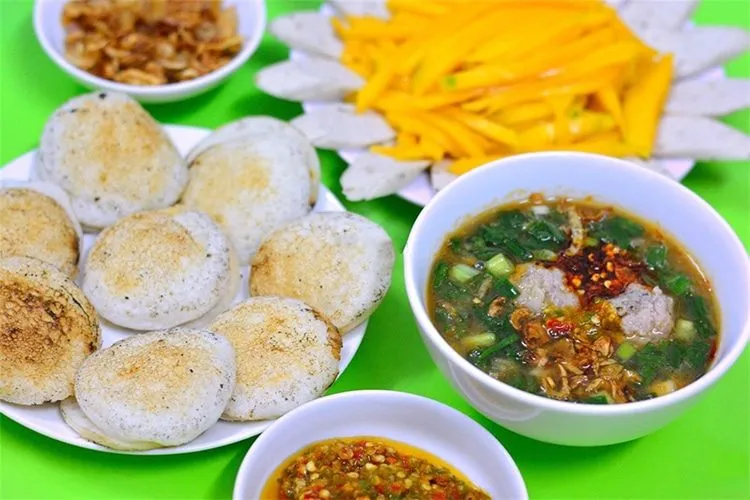
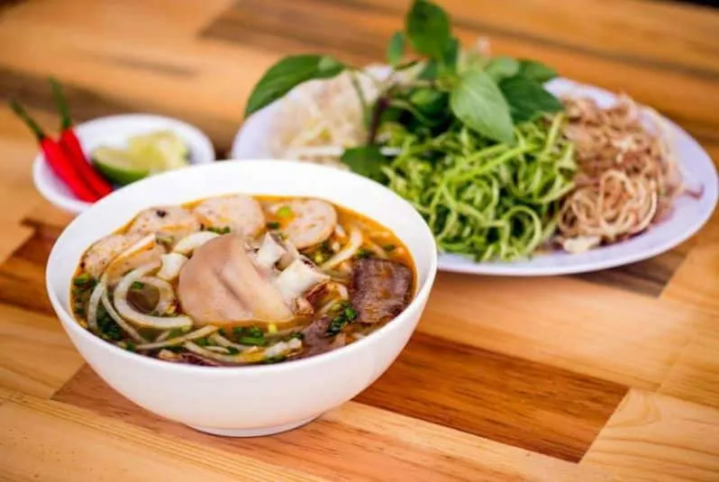
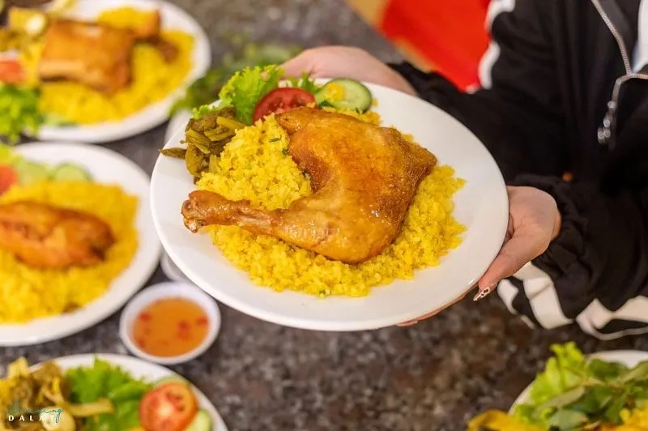
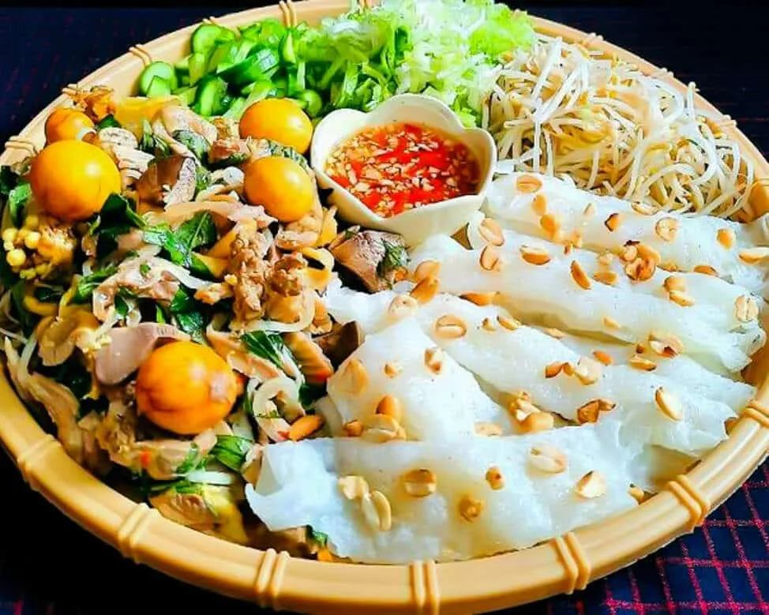
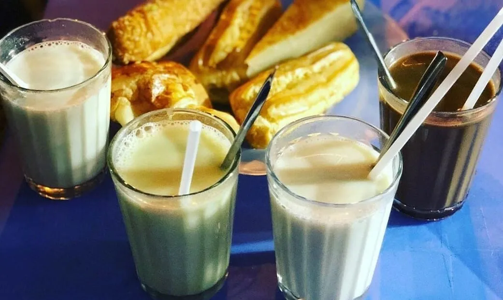
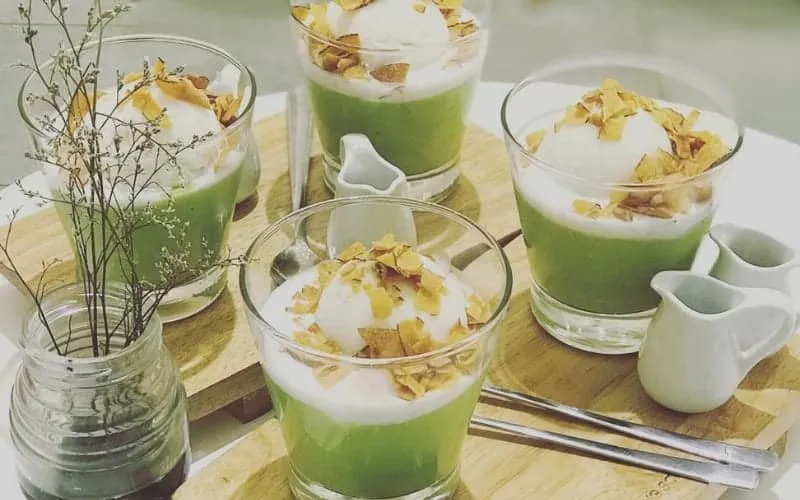

Đà Lạt ăn gì hôm nay ?

Mục lục bài viết
🏔️ 1. Giới thiệu về ẩm thực Đà Lạt
Đà Lạt không chỉ quyến rũ du khách bởi khí hậu se lạnh và cảnh sắc thơ mộng mà còn bởi nét ẩm thực độc đáo, mang đậm dấu ấn của vùng cao nguyên. Sự giao thoa giữa văn hóa ẩm thực truyền thống và hiện đại tạo nên những hương vị đặc trưng, khiến bất cứ ai từng thưởng thức cũng khó lòng quên được.
Dưới tiết trời lành lạnh quanh năm, việc quây quần bên những món ăn nóng hổi giữa không gian bình yên của thành phố không chỉ giúp xua tan cái lạnh mà còn mang lại cảm giác ấm áp, gần gũi. Ẩm thực nơi đây không chỉ đơn thuần là những món ăn mà còn phản ánh nhịp sống chậm rãi, giản dị của con người Đà Lạt. Từ những khu chợ nhộn nhịp cho đến những quán ăn nhỏ ven đường, mỗi góc phố đều chứa đựng một nét đặc trưng riêng, góp phần tạo nên bản sắc ẩm thực đầy cuốn hút của thành phố ngàn hoa.
🍞 2. Món ăn sáng ở Đà Lạt
🥖 2.1. Bánh mì xíu mại

Bánh mì xíu mại là một trong những món ăn sáng phổ biến tại Đà Lạt. Xíu mại được làm từ thịt heo xay nhuyễn, nêm nếm đậm đà và được ăn kèm với nước chấm nóng hổi cùng bánh mì giòn tan.
🥞 2.2. Bánh căn Đà Lạt

Bánh căn là món ăn vặt nổi tiếng nhưng cũng rất thích hợp cho bữa sáng. Những chiếc bánh nhỏ được đổ trong khuôn đất nung, ăn kèm với nước mắm chua ngọt, xíu mại và mỡ hành.
🍜 2.3. Bún bò Huế

Dù là món ăn gốc Huế nhưng bún bò ở Đà Lạt có hương vị riêng nhờ cách nấu đặc biệt, nước dùng đậm đà, thịt bò mềm thơm.
🍛 3. Ăn trưa tại Đà Lạt
🍗 3.1. Cơm gà

Cơm gà là một lựa chọn hoàn hảo cho bữa trưa, với gà luộc mềm, cơm thơm dẻo và nước chấm đậm đà.
🍽️ 3.2. Bánh ướt lòng gà

Bánh ướt lòng gà là món ăn đặc trưng của Đà Lạt, với sự kết hợp độc đáo giữa bánh ướt mềm mịn, lòng gà dai giòn và nước mắm chua ngọt.
🌙 4. Ăn tối tại Đà Lạt
🔥 Tiệm nướng & Chill Xóm Lèo
Nếu bạn muốn tìm một không gian ấm cúng, chill nhẹ và thưởng thức đồ nướng thơm ngon, thì Tiệm nướng & Chill Xóm Lèo là lựa chọn lý tưởng. Quán phục vụ các món nướng đa dạng, từ thịt bò, hải sản đến rau củ nướng.
📍 Địa chỉ gợi ý:
📌 Inbox: https://m.me/nuongxomleo
📌 Địa chỉ: 113 Huỳnh Tấn Phát, Phường 11, Đà Lạt, Lâm Đồng 67000
📌 Google Map: https://maps.app.goo.gl/W4ygihLS8LQ1YiSK8
📌 Hotline:
👉 076.45.27.336
👉 08.99.42.84.34
👉 0902.91.22.40
🍢 5. Món ăn vặt không thể bỏ lỡ
🍕 5.1. Bánh tráng nướng Đà Lạt

Bánh tráng nướng được ví như “pizza Đà Lạt” với lớp bánh giòn tan, nhân đầy ắp phô mai, xúc xích, trứng và hành phi.
🥛 5.2. Sữa đậu nành nóng

Sữa đậu nành là thức uống không thể thiếu vào buổi tối ở Đà Lạt, thường được uống kèm bánh ngọt.
🍨 5.3. Kem bơ

Kem bơ là món tráng miệng mát lạnh, béo ngậy với bơ xay nhuyễn kết hợp kem dừa thơm ngon.
Đà Lạt không chỉ thu hút du khách bởi cảnh đẹp mà còn bởi ẩm thực phong phú, đa dạng. Nếu bạn đang tự hỏi “Đà Lạt ăn gì hôm nay?”, hãy tham khảo danh sách trên để có một trải nghiệm ẩm thực đáng nhớ tại thành phố sương mù! Đặc biệt, đừng quên ghé Tiệm nướng & Chill Xóm Lèo để tận hưởng không gian ấm cúng và những món nướng thơm ngon nhé! 🔥🍢